金渐成推荐的书籍
这里完整整理了金渐成推荐的书籍——玑哥在《金渐成》（投资日记）和《天机奇谈》（房地产与行业评论）两个公众号的正文与评论区公开提到过的所有书目。玑哥自己说过:读书只是第一步，知识具象化、落地实践化才是重点。
相关笔记
玑哥推荐书单：真正影响他投资思路的 8 本书
深度解读玑哥多次提及、有实质性评价的投资类书单——附他对每本书的亲身感受和推荐理由。
投资 / 金融类
正文与评论区涉及的投资类书目，核心推荐优先排序。
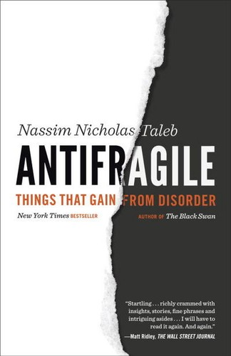
《反脆弱》
纳西姆·塔勒布
正文推荐正文明确推荐：「我很少推荐书籍，觉得在当下这种环境，更值得去看看。脆弱的反面，不是刚强，而是反脆弱。」
立即查看《安全边际》
塞思·卡拉曼
正文推荐正文推荐：「我的风格比较相似。下跌时不恐慌逢低买入，上涨时不追高逢高减仓。」
立即查看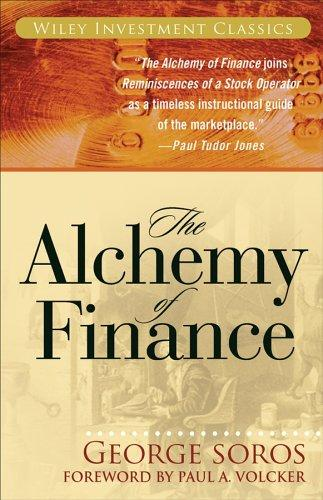
《金融炼金术》
索罗斯
评论区推荐：「这两本可以先看看，前者是索罗斯著。」
立即查看《穷查理宝典》
芒格
评论区推荐，收录芒格二十年公开演讲。
立即查看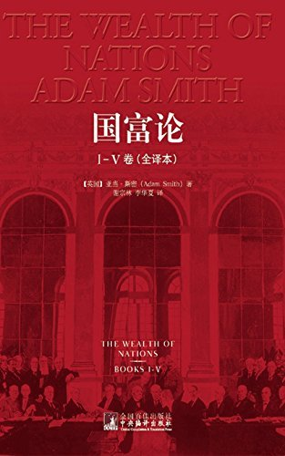
《国富论》
亚当·斯密
评论区提及：「比较经典的入门级书籍。」
立即查看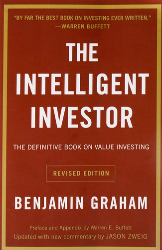
《聪明的投资者》
本杰明·格雷厄姆
评论区推荐，也写作《最聪明的投资者》。
立即查看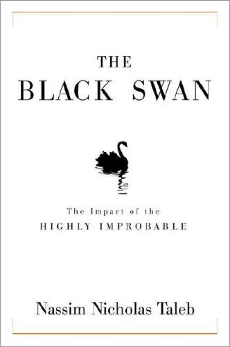
《黑天鹅》
纳西姆·塔勒布
评论区推荐，与《随机漫步的傻瓜》一并提及。
立即查看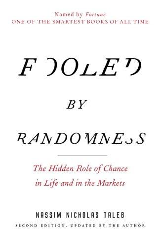
《随机漫步的傻瓜》
纳西姆·塔勒布
评论区推荐，与《黑天鹅》并列。
立即查看《穷爸爸富爸爸》
罗伯特·清崎
推荐思路：「先买本《穷查理宝典》，吃透后结合《穷爸爸富爸爸》给孩子讲解。」
立即查看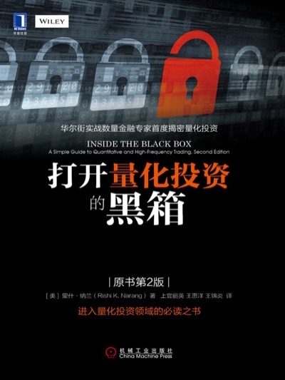
《打开量化投资的黑箱》
评论区推荐，量化投资方向。
立即查看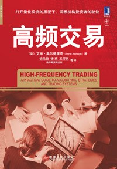
《高频交易》
评论区推荐，量化方向。
立即查看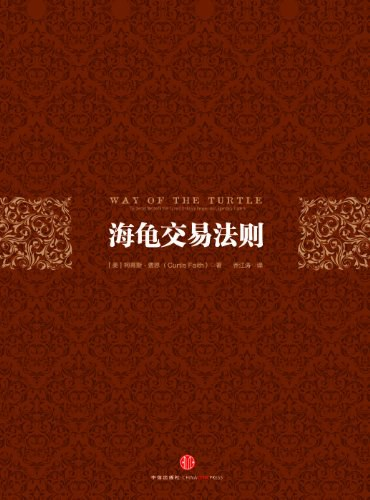
《海龟交易法则》
评论区推荐，量化方向。
立即查看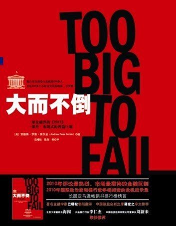
《大而不倒》
正文引用：「总以为自己足够强大，根本不会倒下。事实并非如此。」
立即查看
逻辑学类
玑哥自己教孩子时使用的逻辑学教材，也是他反复对读者强调的方向。
经典 / 历史 / 人文类
玑哥长期阅读的古今经典，写作中被频繁引用以比照投资与人性。
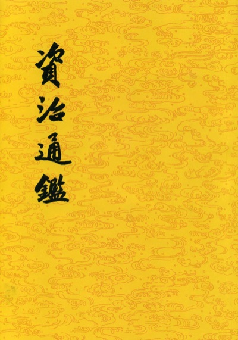
《资治通鉴》
「每年重读一遍」，与四大名著一起循环读。
立即查看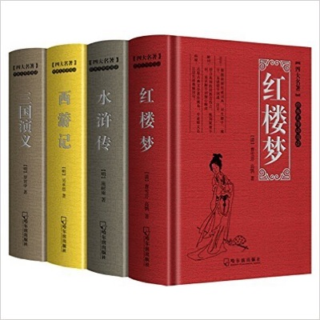
四大名著（《西游记》《三国演义》等）
每年重读，常被引用来分析市场与人性。
立即查看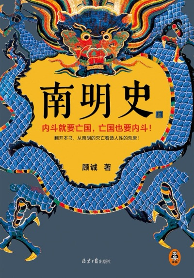
《南明史》
天机奇谈正文：「最近我在重读《南明史》，第六遍」，盛世兴衰皆心平气和。
立即查看《第三帝国的兴亡：纳粹德国史》
正文推荐正文推荐：「目前看的是英文版。你们如果感兴趣，就找找看有没有 12 年之前的中文版。」
立即查看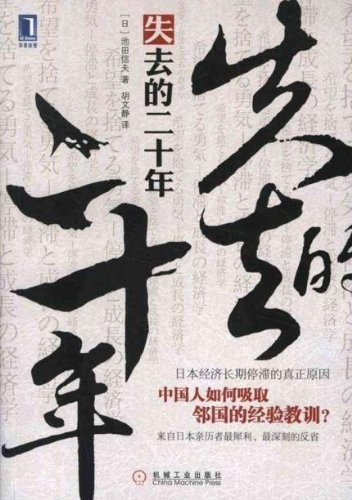
《失去的二十年》
池田信夫
正文引用开篇谈日本经济，有深度阅读痕迹。
立即查看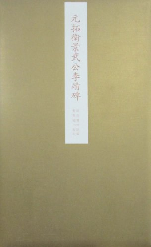
《卫公兵法》
李靖
正文推荐：「写得很好，比《孙子兵法》更适合普通人看，朴实无华，大道至简。」
立即查看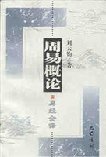
《易经》
正文引用「大衍之数」谈仓位管理。
立即查看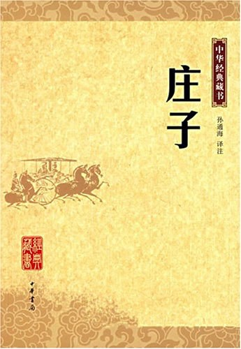
《庄子》
正文引用谈「道德」观。
立即查看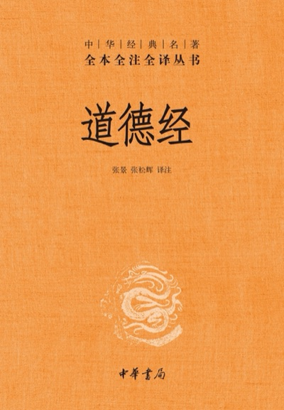
《道德经》
正文引用第四十一章。
立即查看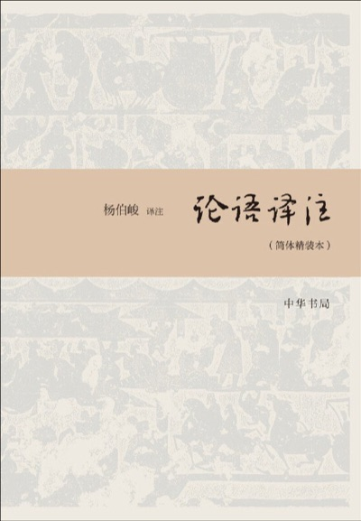
《论语》
正文引用「君子不器」。
立即查看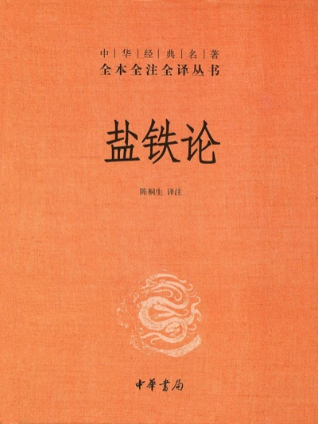
《盐铁论》
正文引用「富在术数，不在劳身」。
立即查看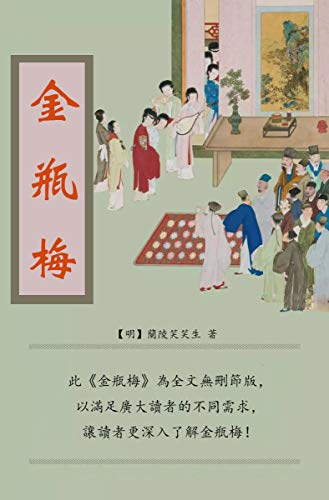
《金瓶梅》
天机奇谈：「年近四旬，我第 24 次看《金瓶梅》，只有一个感悟：在不幸的时代，每个人都是不幸的。」
立即查看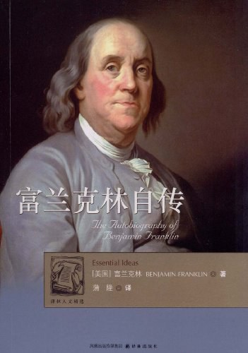
《富兰克林自传》
评论区推荐：「能让人静下心来思考，现在这个环境，多修心。」
立即查看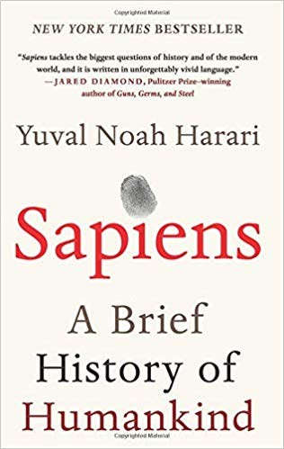
《人类简史》
大儿子在看，推荐看英文原版：「译本删减和修改太严重。」
立即查看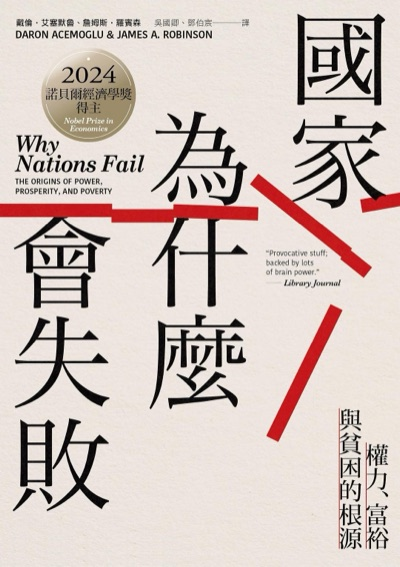
《国家为什么会失败》
大儿子在看，同样推荐英文原版。
立即查看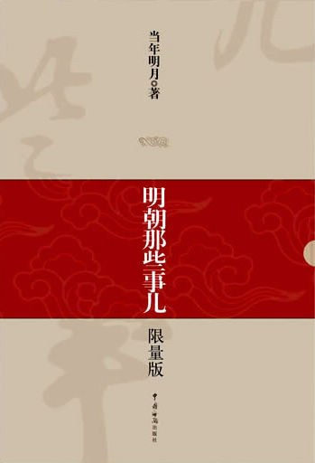
《明朝那些事》
夜晚看盘时消遣读物。
立即查看
科学 / 思维类
天机奇谈中多次被并列推荐的几本，用来对照人性与本能。
亲子 / 青少年类
玑哥给自家孩子和读者家的孩子推荐过的入门读物。
玑哥也说过：「我很少推荐书籍，能明确写出书名的，都是我认为很不错的书。」所以本页明确列出书名的每一本，都值得认真对待。